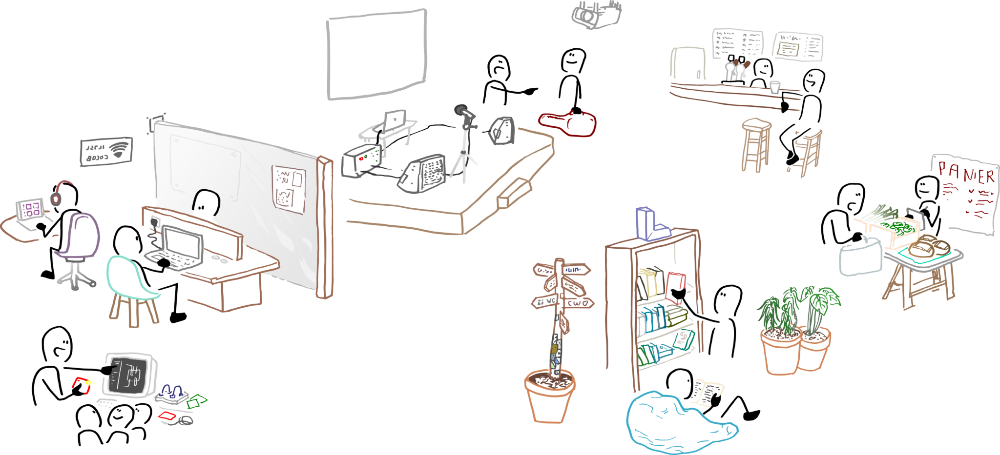
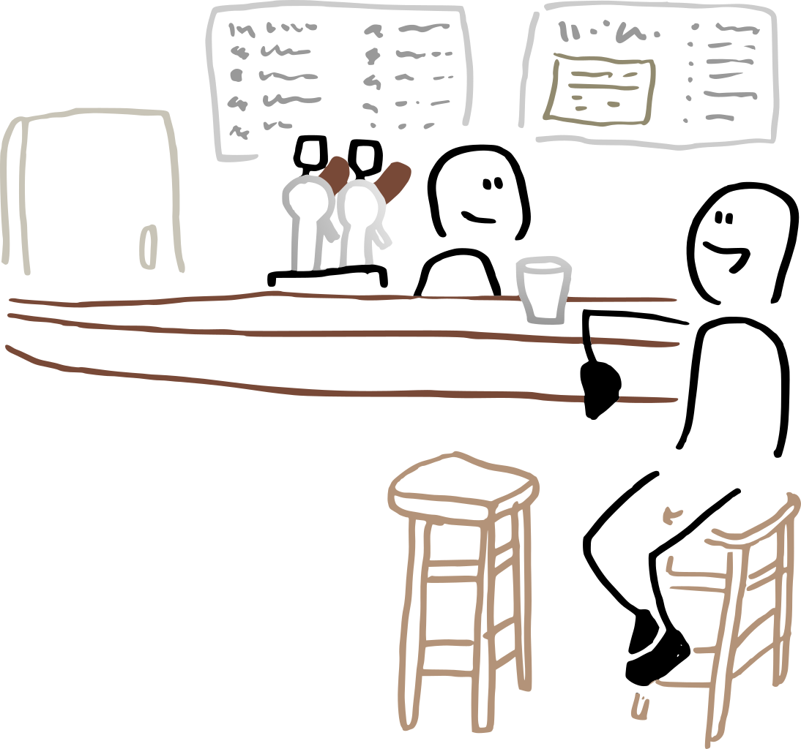

Upop' Bar
Un café associatif d'éducation populaire à La Filature, Villeurbanne.
Upop' Bar : un point de l'Université Populaire à La Filature¶

Ce qui nous met en mouvement¶
L'Upop' Bar est un projet de territoire. Il rassemble dans un même lieu, pour un an, des communs de natures différentes : des communs d'espace que tient et anime un tiers-lieu vivant avec la Filature et son comptoir, sa cuisine, son pavillon, sa cour ; des communs numériques fabriqués depuis dix ans par Code Commun utilisés par plusieurs centaines de lieux ; des communs pédagogiques que l'Université Populaire de Villeurbanne construit à travers ses arpentages d'ouvrages, ses conférences, ses débats ; des communs de pratiques portés depuis dix ans par l'Atelier Soudé et Eisenia auprès des habitant·es, dans les repair'cafés du samedi et les bricolages partagés. Et la Méandre apporte son expertise dans l'analyse institutionnelle et la structuration de collectifs, éprouvée sur d'autres tiers-lieux.
Mettre ces communs côte à côte ne les additionne pas : cela démultiplie leur puissance de fabriquer des liens, de faire émerger des envies, des projets, des rencontres. C'est cette circulation-là, discrète et bien réelle, que nous voulons rendre possible.
Faire vivre ensemble ces communs de registres différents, dans un café, sur une scène, dans une cuisine, dans une cour : voilà ce qui nous met en mouvement. La configuration que ce lieu propose est une chance rare. Un cadre matériel qui tient, un horizon clair, un quartier en transformation qui appelle à l'hospitalité, et une géométrie d'acteurs qui rend possible une expérience que chacun et chacune d'entre nous cherche à vivre depuis longtemps : tenir ensemble, dans un usage incarné, ce que nous fabriquons séparément.
Ce que cela produit pour le territoire, nous le construirons en le faisant. Ce que nous portons déjà, c'est la conviction que les conditions sont réunies pour faire honneur à la chance qui nous est donnée. Les structures, les moyens et la programmation qui suivent dessinent comment.
Ce qu'on imagine¶
Un café, une cour, une terrasse, un pavillon en bois, une petite salle attenante. Au comptoir, des bénévoles (nous) qui servent des verres, posent une question, font une présentation. Quelqu'un·e qui voulait juste boire un café découvre qu'il y a, deux tables plus loin, une chercheuse, un artisan menuisier, un·e jeune en service civique. Un soir par semaine, une scène se monte dans le pavillon, et quelqu'un d'autre est venu pour un concert et reste pour le reste. Quelque chose se met à circuler. Ce n'est pas grand-chose et c'est tout.
L'Upop' Bar serait un des points de visibilité de l'Université Populaire de Villeurbanne, pas le lieu central, un point parmi d'autres. La pluralité des lieux nous semble importante : l'Upop' n'a pas de centre, elle a des points d'ancrage. Le bar pourrait être l'un de ces points, celui qui se tient au cœur d'une friche industrielle en transformation, dans un quartier qui se construit, et qui propose un seuil bas (un café à un euro, pas de carte d'adhérent demandée à l'entrée) pour entrer dans la circulation des savoirs.
Au-delà du café et des concerts, le lieu pourrait accueillir des moments Upop' (conférences, débats, arpentages d'ouvrages, vulgarisation scientifique, échanges rural-urbain), des ateliers de ré-emploi et d'économie circulaire, un espace du faire pour des communs numériques inclusifs avec une attention particulière portée à la mixité sociale, de genre et au handicap, des matinées d'accompagnement parental, des formations courtes, et des expérimentations sociales orientées communs d'espaces. La cuisine, dans un premier temps, reste à inventer.

Pourquoi c'est faisable¶
On s'emballe, mais on s'emballe en sachant ce qu'on fait. Quatre choses, parmi celles qui rassurent, méritent d'être posées noir sur blanc.
L'argent¶
Le loyer charges comprises est de 1008 € par mois pour le bâtiment principal + 300€ pour le pavillon.
L'investissement initial pour reprendre le matériel du bar pourrait tourner autour de 1500 €.
La Mairie de Villeurbanne a donné un accord oral pour un coup de pouce d'environ 3000 €.
Code Commun, la coopérative SCIC, accepte de mobiliser environ 10 000 € sur ses fonds propres pour porter l'amorce du projet, donc 4 000€ pour assurer les trois premiers mois.
Les recettes du bar et de la programmation devraient permettre d'absorber le fonctionnement courant.
Un volet économique détaillé (estimation des rentrées et des sorties, modèle indicatif et non contraignant) est ajouté à ce document :
La ressource humaine¶
Le bénévolat est notre vraie monnaie. Mises bout à bout, les structures qui portent le projet représentent plusieurs centaines d'adhérents et adhérentes. Tenir un comptoir trois soirs par semaine est à notre portée collective. Tenir un comptoir avec une intention éducative, c'est ce qui en fait un projet.
Les outils de gouvernance¶
C'est sans doute là que notre collectif est le plus solide.
Code Commun est une SCIC à trois collèges qui pratique la gouvernance partagée depuis 2020 et qui a géré environ 400 000 € de subventions publiques sans incident. La coopérative travaille régulièrement avec les réseaux régionaux des tiers-lieux et est formé sur tout un tas d'outils de gouvernances.
La Méandre accompagne professionnellement la structuration de collectifs (socianalyse, diagnostic institutionnel, écriture collective de projet associatif) et a déjà fait ce travail pour un tiers-lieu à Uzès. L'Upop' construit son propre projet politique avec son Vortex.
Tenir un café associatif n'est pas anecdotique : c'est un commun d'espace, avec ses tensions, ses moments difficiles, ses arbitrages quotidiens. Nous avons l'expérience, les méthodes, et les pairs auprès desquels chercher conseil quand quelque chose coince.
Le métier¶
Ouvrir un café associatif n'est pas qu'une affaire de bonne volonté et de gouvernance, c'est aussi un métier. Code Commun apporte une compétence festivalière et technique : Jonas est régisseur de festival et ingénieur du son. Son équipe sait monter une scène, câbler une console, accueillir un musicien, tenir une billetterie. La Méandre apporte le métier de l'animation de collectif et de la formation. L'Atelier Soudé et Eisenia apportent dix ans d'animation grand public sur le réemploi et le bricolage. Des Saveurs et des Ailes apporterait celui de la restauration et de l'insertion. Le projet ne repose pas sur des amateurs enthousiastes, mais sur un assemblage de compétences professionnelles portées par des structures qui les exercent au quotidien.
Les conditions de réalisation¶
Le projet est court : un an, août 2026 à été 2027. Le tiers-lieu La Filature s'arrêtera à cette échéance, le bâtiment rejoindra son destin urbain. Cette durée nous convient. Elle nous donne le droit d'expérimenter sans la pression de la pérennité, mais elle nous engage à produire quelque chose qui survive au lieu : une méthode, un réseau d'acteurs, un commun d'expérience documenté.
Le portage juridique et financier pourrait être assuré par la SCIC Code Commun, qui a la maturité administrative pour le faire. L'animation collective serait partagée entre les structures porteuses, avec un cadre à écrire. La coopérative invitera chacun des acteurs a prendre une part sociale pour participer à sa gouvernance générale.